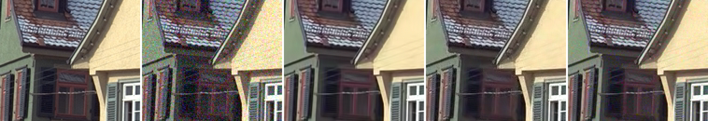
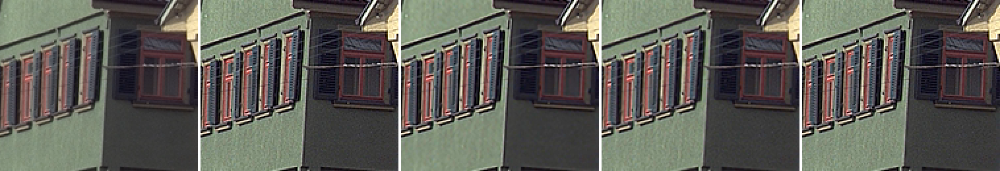
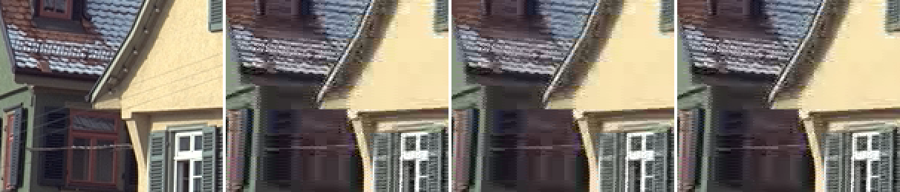

Classical filters for deps 1.16.0
Probe and build, 2026-11-08. SangNom, the vszip upgrade (CPU NLMeans, and whether WNNM earns a place), and three ports from vs-jetpack: FixInterlacedFades, vine_dehalo and mpeg2stinx. Apple M1 Pro (macOS arm64), private copy of the deps bundle with vszip 24.0.0 and SangNom r45.
- SangNom: built, as its own Anti-aliasing method. havsfunc's
santiag(type="sangnom")cannot be used: at strength 0 it callsSangNom(order=0), which SangNom r45 treats as double-rate and refuses without_FieldBased(measured: "clip's frames must have the _FieldBased property when order is 0" at every depth). The method supersamples 2x, runs SangNom (order=1) along each axis and comes back down. It runs at 8/10/12/16-bit and float;aais scaled by the plugin (raw SangNom, 8 vs 10-bit: 0.047 levels). - vszip 22.1.0 → 24.0.0: built. 24.0.0 is the first release with CPU
NLMeans;WNNMarrived in 22.0.0. NLMeans (CPU) is an advanced Noise Reduction method sharing KNLMeansCL's settings: on the same input and arguments it gives KNLMeansCL's picture (see the parity line below), with no OpenCL device. The KNLMeans "no device" message now points at it. CLAHE still passes its depth-parity test (1.34 levels against a 3.0 tolerance). - WNNM: not added. Each at its best sigma, its luma runs from +0.7 to −2.3 dB against the shipped BM3D (ahead only at sigma 4, with a temporal radius), and its chroma is 2.6–7.2 dB worse. A wider sweep (to 4× the noise,
scripts/wnnm_wide.py) found nothing better than 2–2.5×. It is fast — 10.3 fps at 1080p with a temporal radius, where the shipped BM3D path manages 0.2 — but NLMeans (CPU), added in this change, is faster still (23.0 fps) with chroma 1–4 dB better than WNNM's, so the fast-CPU slot is taken. - FixInterlacedFades: built, as an IVTC option. Matches vs-jetpack exactly (0.0000 levels, both modes). On a fade applied after the field split it closes the field-brightness gap from 5.27 to 0.29 levels (average) / 0.00004 (match); on ordinary frames it changes nothing measurable.
- vine_dehalo: built, advanced-only. A faithful port (vs-jetpack's own function could not run against the bundle; see §5). On the oversharpened fixtures it recovers +0.9 to +1.1 dB, where DeHalo_alpha recovers +4.1 to +4.4 dB by blurring, at a fraction of vine's cost.
- mpeg2stinx: built, advanced-only, with a warning in its description. Matches vs-jetpack to 0.04 levels, but it lost PSNR on every fixture tried, up to −3.0 dB on detailed content: it clamps each field to a bob of the other, which costs vertical detail. None of these fixtures carries the specific artefact it is written for, so it ships for the user who has that artefact, and says what it costs.
1. Fixtures and method
Three Kodak PhotoCD images (kodim08 buildings, kodim19 fence, kodim23 parrots) panned by a 640×480 window, 2 px per frame, 30 frames, lossless (scripts/make_fixtures.sh). A whole-pixel pan keeps every frame an exact crop, so there is exact ground truth and real motion for the temporal methods. Noise is AddGrain at a known sigma (8-bit levels; measured 4.02 / 8.01 / 12.0). Each method is swept over strengths that scale with the noise and reported at its best luma PSNR. The MPEG-2 fixtures are the pans 3:2-telecined and encoded as interlaced MPEG-2 at 1000 and 2000 kbps (scripts/make_tc_fixtures.sh), then inverse-telecined with VIVTC as the IVTC method does; every kept frame was checked to match its own clean frame far better than its neighbours.
The template code is measured as shipped: scripts/ports_compare.py lifts each block out of worker/templates/pipeline_template.vpy and runs it. Speeds come from scripts/bench.py, one fresh vspipe per measurement, median of three; the fps column printed by nr_compare.py (in results/nr_compare.txt) was taken while other probes ran and through cached frames, and is not used. That run also crashed in its last step (a float compared with == 0) before writing its JSON, so the tables are parsed from its printed log (scripts/parse_nr_log.py) and the depth check was re-run alone.
2. Noise reduction: BM3D, NLMeans (CPU and GPU), WNNM
| method | σ 4: Y | U | strength | σ 8: Y | U | strength | σ 12: Y | U | strength |
|---|---|---|---|---|---|---|---|---|---|
| noisy input | 36.05 | 30.05 | 26.54 | ||||||
| BM3D (bm3d r12, r=1, Final) - shipped | 40.44 | 45.77 | 8 | 35.89 | 42.67 | 16 | 33.34 | 40.88 | 24 |
| NLMeans vszip CPU (d=1 a=2 s=4) | 39.93 | 44.78 | 3.5 | 34.84 | 41.68 | 7 | 32.17 | 39.85 | 10.5 |
| KNLMeansCL GPU (d=1 a=2 s=4) | 39.93 | 44.78 | 3.5 | 34.84 | 41.68 | 7 | 32.17 | 39.85 | 10.5 |
| WNNM vszip (r=0) | 37.80 | 43.23 | 8 | 33.43 | 38.25 | 16 | 31.00 | 34.87 | 24 |
| WNNM vszip (r=1) | 41.01 | 43.17 | 8 | 35.85 | 37.31 | 16 | 32.92 | 33.65 | 24 |
| BM3D vszip (r=1) | 38.24 | 43.95 | 5 | 34.00 | 40.00 | 10 | 31.64 | 37.55 | 15 |
| method | σ 4: Y | U | strength | σ 8: Y | U | strength | σ 12: Y | U | strength |
|---|---|---|---|---|---|---|---|---|---|
| noisy input | 36.05 | 30.05 | 26.53 | ||||||
| BM3D (bm3d r12, r=1, Final) - shipped | 40.61 | 46.68 | 8 | 36.30 | 43.19 | 12 | 34.14 | 41.17 | 18 |
| NLMeans vszip CPU (d=1 a=2 s=4) | 40.62 | 45.58 | 4.5 | 35.93 | 42.87 | 7 | 33.24 | 40.85 | 10.5 |
| KNLMeansCL GPU (d=1 a=2 s=4) | 40.62 | 45.58 | 4.5 | 35.93 | 42.87 | 7 | 33.24 | 40.85 | 10.5 |
| WNNM vszip (r=0) | 38.65 | 44.02 | 8 | 34.47 | 38.98 | 16 | 32.16 | 35.62 | 24 |
| WNNM vszip (r=1) | 41.33 | 43.67 | 10 | 36.14 | 38.00 | 16 | 33.20 | 34.41 | 24 |
| BM3D vszip (r=1) | 39.15 | 44.79 | 5 | 35.21 | 40.93 | 10 | 32.96 | 40.19 | 18 |
| method | σ 4: Y | U | strength | σ 8: Y | U | strength | σ 12: Y | U | strength |
|---|---|---|---|---|---|---|---|---|---|
| noisy input | 36.05 | 30.05 | 26.53 | ||||||
| BM3D (bm3d r12, r=1, Final) - shipped | 43.15 | 47.34 | 8 | 40.12 | 44.00 | 16 | 38.18 | 41.94 | 24 |
| NLMeans vszip CPU (d=1 a=2 s=4) | 42.81 | 46.78 | 3.5 | 39.30 | 43.26 | 7 | 37.24 | 41.14 | 13.5 |
| KNLMeansCL GPU (d=1 a=2 s=4) | 42.81 | 46.78 | 3.5 | 39.30 | 43.26 | 7 | 37.24 | 41.14 | 13.5 |
| WNNM vszip (r=0) | 41.41 | 44.23 | 8 | 37.42 | 39.23 | 16 | 34.82 | 35.89 | 24 |
| WNNM vszip (r=1) | 42.62 | 44.13 | 10 | 37.87 | 38.42 | 20 | 34.79 | 34.81 | 30 |
| BM3D vszip (r=1) | 41.97 | 45.60 | 6 | 38.56 | 41.79 | 12 | 36.47 | 39.39 | 18 |
| method | 10-bit | 16-bit |
|---|---|---|
| NLMeans vszip h=2 | 0.005 | 0.006 |
| WNNM sigma=8 | 0.268 | 0.272 |
| BM3D template sigma=8 | 0.273 | 0.277 |
vszip NLMeans vs KNLMeansCL, same args: mean |diff| Y 0.0000 U 0.0000 levels

Speed
| method | 640x480 | 1920x1080 |
|---|---|---|
| BM3D (bm3d r12, r=1, Final, sigma 16) - shipped | 1.5 | 0.2 |
| BM3D (bm3d r12, r=0, Final, sigma 16) | 1.1 | 0.1 |
| NLMeans vszip CPU (d=1 a=2 s=4, h 7) | 181.3 | 23.0 |
| KNLMeansCL GPU (d=1 a=2 s=4, h 7) | 126.5 | 18.5 |
| WNNM vszip (r=0, sigma 16) | 159.1 | 16.7 |
| WNNM vszip (r=1, sigma 16) | 90.3 | 10.3 |
| BM3D vszip (r=1, sigma 10) | 150.4 | 16.9 |
| input only (decode + noise) | 1999.4 | 1146.7 |
| AA: daa | 60.7 | 15.9 |
| AA: santiag (nnedi3, strength 1/1) | 27.2 | 19.6 |
| AA: SangNom (aa 48) | 79.9 | 8.6 |
| Dehalo: DeHalo_alpha (defaults) | 1399.0 | 211.5 |
| Dehalo: vine (16, 0.5, 1.0) | 31.6 | 15.3 |
| Deblock: Deblock_QED (defaults) | 1073.5 | 151.7 |
| Deblock: mpeg2stinx | 36.1 | 10.0 |
| IVTC fade fix (average), alone | 588.2 | 75.8 |
NLMeans (CPU and GPU, identical) sits 0.3–1.2 dB below BM3D on luma. The vszip BM3D (new in 24.0.0) was measured for the record only: 1.1–2.2 dB below the shipped bm3d r12 path on every fixture and sigma, so it is not used.
3. SangNom anti-aliasing
Speed, corrected. An early probe (Python clip.frames(), 60 frames, other jobs running) put SangNom at 45 fps against santiag's 17 and daa's 26, and the first draft of this change called it the fastest method. The vspipe benchmark disagrees: at 1080p SangNom runs 8.6 fps against daa's 15.9 and santiag's 19.6 — it works on a picture twice the size in each direction. It is offered as the sharpest, not the fastest, and the method's description says it is slower on HD.
Every depth runs: raw SangNom changes the picture by 4.97 levels at 8, 10, 12 and 16-bit alike, and the method by 4.37–4.39. The method's 8 vs 10/16-bit difference is 0.44–0.48 levels (santiag's own is 0.37), most of it the 2× Spline36 round trip. A still frame repeated gives bit-identical output, so it does not shimmer.
| method | mean change, levels |
|---|---|
| daa | 3.41 |
| santiag (nnedi3, 1/1) | 4.18 |
| SangNom AA (48) | 4.11 |
The speeds are in §2's speed table (run on the clean pan).
4. FixInterlacedFades (the IVTC fade fix)
A fade applied to telecined video changes brightness between a frame's two fields, so no field match is clean. The fixture fades the kodim23 pan to black per field (the top field at its time, the bottom half a frame later). The heavy test does the same to a real clip through the whole worker: the gap between field brightnesses goes from 4.12 to 0.06 levels.
| measure | value |
|---|---|
| field_gap_faded | 5.2735 |
| field_gap_fixed | 0.2856 |
| field_gap_fixed_match | 0.0000 |
| field_gap_clean | 0.0011 |
| psnr_faded_vs_truth | 38.9722 |
| psnr_fixed_vs_truth | 52.9206 |
| unfaded_change_mad | 0.0000 |
| unfaded_change_mad_mpeg2 | 0.0000 |
field_gap_*: mean |top-field mean − bottom-field mean| in levels; psnr_*_vs_truth: luma PSNR against each frame faded uniformly to its two fields' mean level; unfaded_change_mad: mean change the fix makes to the clean (not fading) pan, and to the decoded MPEG-2 pan.
A crash found by the benchmark, and fixed. The first version of the block made an akarin Expr per frame inside two concurrent FrameEvals. Through vspipe that aborted (SIGABRT on 10 frames), segfaulted (SIGSEGV on a 720×576 IVTC job through the worker) or spun one core indefinitely — the speed benchmark sat on 30 frames for 97 minutes before it was killed. Single-threaded, or with std.Expr, the same graph took a second, which is why the Python-side probes above and the first 320×240 heavy test never saw it. The block now stamps the gains as frame properties (ModifyFrame, which creates no nodes) and applies them with one akarin expression; output is unchanged (still 0.0000 levels from vs-jetpack). A heavy test now times a full 720×576 IVTC + fade-fix job (2.5 s) and fails on the old block with the SIGSEGV. Every number in this section after the fix was re-measured.
A correction found during the work: the first run reported a residual gap of 3.3 levels for average. It was real but specific: on the last frame of a fade that reaches full black one field is already black, upstream's expression leaves a zero-distance field alone, and average then sets the other to half. Match handles it. That is why both modes are offered. A second trap: std.DoubleWeave flags its output interlaced, so without resetting _FieldBased a later resize treated the fixed (progressive) frames as fields; the block resets it.
5. vine_dehalo
vs-jetpack's own vine_dehalo could not be run against the bundle as a reference: its Catrom downscale is a custom kernel on the resize2 plugin, which the bundle does not ship (loading a downloaded resize2 binary just for the comparison was not done). The port was checked line by line instead; its NLMeans calls are vs-jetpack 3.0.0's CPU backend verbatim (vszip.NLMeans), and mpeg2stinx, ported the same way, matched vs-jetpack to 0.04 levels.
The fixture is the clean pan with an unsharp mask (Gaussian sigma 1.5, amount 1.5), which brightens edges and fine texture alike, so PSNR against the clean pan rewards undoing sharpening of any kind. DeHalo_alpha wins on that measure by blurring; vine keeps texture, which is its purpose.
| method | Y dB |
|---|---|
| haloed (no filter) | 21.93 |
| vine (16, 0.5, 1.0) | 22.80 |
| vine (24, 0.5, 1.0) | 23.06 |
| vine (8, 0.5, 1.0) | 22.45 |
| DeHalo_alpha (defaults) | 26.28 |
| FineDehalo (defaults) | 22.00 |
| method | Y dB |
|---|---|
| haloed (no filter) | 31.99 |
| vine (16, 0.5, 1.0) | 33.12 |
| vine (24, 0.5, 1.0) | 33.26 |
| vine (8, 0.5, 1.0) | 32.83 |
| DeHalo_alpha (defaults) | 36.11 |
| FineDehalo (defaults) | 32.25 |

6. mpeg2stinx
| fixture | decoded (no filter) | mpeg2stinx (TFF) | mpeg2stinx (wrong order: BFF) | Deblock_QED (defaults) | Deblock (quant 25) |
|---|---|---|---|---|---|
| kodim08 telecined @1000k | 33.30 / 41.61 | 31.54 / 41.68 | 31.53 / 41.68 | 33.24 / 41.77 | 33.27 / 41.88 |
| kodim08 progressive-as-interlaced @1000k | 42.17 / 46.13 | 38.29 / 46.21 | 38.26 / 46.21 | 41.99 / 45.95 | 42.07 / 46.06 |
| kodim08 telecined @2000k | 39.32 / 44.60 | 36.31 / 44.71 | 36.29 / 44.71 | 39.24 / 44.61 | 39.29 / 44.78 |
| kodim08 progressive-as-interlaced @2000k | 42.39 / 46.20 | 38.38 / 46.28 | 38.36 / 46.28 | 42.18 / 46.01 | 42.28 / 46.13 |
| kodim23 telecined @1000k | 43.35 / 47.01 | 43.08 / 47.07 | 43.06 / 47.07 | 43.22 / 47.12 | 43.25 / 47.27 |
| kodim23 progressive-as-interlaced @1000k | 44.19 / 47.60 | 43.90 / 47.65 | 43.88 / 47.65 | 44.00 / 47.75 | 44.01 / 47.89 |
| kodim23 telecined @2000k | 44.33 / 47.66 | 43.99 / 47.74 | 43.96 / 47.74 | 44.09 / 47.73 | 44.12 / 47.86 |
| kodim23 progressive-as-interlaced @2000k | 44.19 / 47.60 | 43.90 / 47.65 | 43.88 / 47.65 | 44.00 / 47.75 | 44.01 / 47.89 |
Per frame (kodim08, telecined, 1000 kbps), mpeg2stinx costs about 4.5 dB on the cleanly coded frames (42.4 → 38.1) and gains 0.1 dB on the starved ones (26.4 → 26.5); the first and last frames are untouched because the temporal limit compares a frame with itself there. The wrong field order changes the result by 0.01–0.03 dB: on progressive film frames both fields come from the same instant.

7. Depth parity of the ports
| block | 10-bit | 16-bit |
|---|---|---|
| vine | 0.450 | 0.455 |
| mpeg2stinx | 0.009 | 0.010 |
| FixInterlacedFades | 0.251 | 0.257 |
| SangNom AA | 0.436 | 0.476 |
The heavy high-bit-depth suite (app/test/integration_high_bit_depth_filters_test.dart) agrees, through the whole worker at 8 vs 10-bit (4:2:2): NLMeans (CPU) 0.301, KNLMeansCL 0.301, SangNom 0.491, the fade fix 0.277, vine 0.406, mpeg2stinx 0.287, CLAHE 1.336 levels (tolerance 2.0, CLAHE 3.0).
8. Deps and platforms
- SangNom r45 from its PyPI wheels on every platform, pinned by hash. The x64 builds (macOS, Linux, Windows) contain SSE2 code only — no
ymm/zmmregister anywhere (objdump) and no static initializers (Scripts/check-load-time-simd.py), so one file serves both CPU tiers. Minimum macOS 11.0 (arm64) / 10.15 (x64); manylinux_2_28; the Windows DLL imports only the UCRT. - Licence: the source header and LICENSE grant MIT (© 2016 james1201, © 2013 Victor Efimov); the same header says "Binaries are GPL v2", and the wheels' metadata says GPL-2.0. Credited as both.
- vszip 24.0.0: the baseline x64 builds contain no AVX (and no longer call
fmaf). The arm64 wheel is minos 15.0 — exactly the arm64 floor — with 4 KB of header room. macOS x64 builds the sdist: it now needs Zig 0.17.0 and-Doptimize=fast, and the headerpad patch had to followlib.use_llvmintoif (build_vs). Cross-built here with that exact recipe: minos 12.0, 4104 bytes of header room, signs cleanly; loaded under Rosetta into the deps 1.10.0 x64 VapourSynth R78, NLMeans, WNNM, CLAHE and the x64 SangNom all ran. - Not verified: anything on Windows or Linux, and the x64 builds on a real Intel CPU (Rosetta executes AVX, so it proves nothing about CPU features; the objdump scan is the evidence there). The deps CI run is the test.
9. Decisions
- SangNom as a separate method, santiag's interpolator stays pinned to nnedi3 — because havsfunc's sangnom path is incompatible with SangNom r45.
- NLMeans (CPU) reuses the KNLMeans parameters rather than its own — same algorithm, same arguments, same picture; switching between them keeps the settings.
- WNNM not added — no quality or speed niche BM3D does not already fill.
- vine and mpeg2stinx advanced-only — both are specialist tools, and the simple Dehalo slots are full.
- mpeg2stinx never takes the Deblock pass's per-field path — it is a cross-field filter by design.
- The fade fix after VFM and before VDecimate, off by default — it only helps a fade that combs.
10. Not tested
- Real footage with a combing fade or with the comb-like MPEG-2 noise mpeg2stinx targets: no such clip was available.
- vine against vs-jetpack's own output (needs resize2).
- Any platform but macOS arm64 (and macOS x64 load under Rosetta).
Scripts
scripts/make_fixtures.sh, scripts/make_tc_fixtures.sh build the fixtures into $SCRATCH/fx (the Kodak images are fetched from r0k.us). scripts/run.sh <probe> runs a probe under a deps bundle's Python: nr_compare.py (§2), ports_compare.py (§3–7), ports_vs_reference.py (the vs-jetpack comparison; needs vsjetpack 2.2.7, whose three functions are identical to 3.0.0's), bench.py (speeds), images.py (the figures), and tables.py prints the tables above from the probes' JSON.